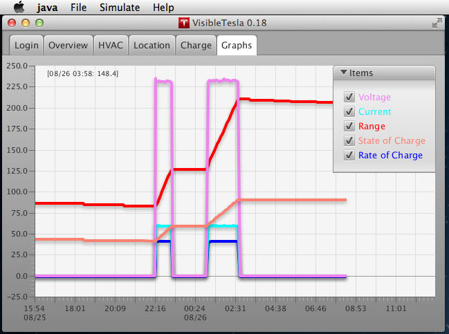

VisibleTesla lets you view, monitor, and control your Tesla Model S in much the same way as the official Tesla iPhone and Android apps do. Unlike those apps, VisibleTesla is not official, not from Tesla, and not supported.
VisibleTesla is free for personal and non-commercial use. It is based on the work of many members of the Tesla Motors Club Forum.
Disclaimer: Be careful when using this software as it can lock and unlock your car as well as control various functions relating to the charging system, sun roof, lights, horn, and other subsystems of the car. Don't to send your login and password to anyone other than Tesla or you are giving away the authentication details required to control your car. VisibleTesla does not store your password and only communicates with Tesla.
Use this application at your own risk. The authors do not guarantee its proper functioning. This application attempts to use the same interfaces used by the official Tesla apps. However, it is possible that use of this application may cause unexpected damage for which nobody but you are responsible. Use of this application can change the settings on your car and may have negative consequences such as (but not limited to) unlocking the doors, opening the sun roof, or reducing the available charge in the battery.
The app has three menus: File, Simulate, and Help. The items of the first two menus will be described below. The Help menu allows you to bring up this documentation, the release notes, and a general "About" dialog.
The following screenshot shows the logged-in state:
The Overview tab shows basic state about the vehicle and gives access to commands like lock/unlock, operating the panoramic roof (if you have one), flashing the lights, etc.These screen shots show the overview tab reflecting various states of the car. The second screen shows an information dialog that gives details about your car.


The next screen shot shows the panoramic roof in the vented state. The user vented the roof by pressing the Vent button. The next screenshot shows wht the app will display when the driver's door is open.


Next we have the HVAC tab which shows the state of that system. It also allows you to set the target temperature and turn on/off the system.

The location tab embeds a Google map to show the current location and the marker is rotated to show the current heading. There is a "Browse" button that will launch your default browser displaying a Google map with the car's location so you can get directions or perform any other Google map function.

Like a normal Google Map, you can zoom in and out, you can pan, and switch to satellite mode. If you click on the arrow representing your Tesla, an info window will pop up displaying the street address that is closest to your car.
The map will keep the car centered unless you manually pan the map. If you do so, you are indicating that you want to view a specific location and the app will not recenter the map as the car moves. You may always get back to "center-on-car" mode by clicking on the car. That will recenter the map, enter "center-on-car" mode, and show the address nearest the car in a popup info window.
If the user pans the map manually thereby leaving "center-on-car" mode, the car may eventually drive off the edge of the map. VisibleTesla doesn't allow that to happen. Instead it repositions the map slightly to keep the car just at the edge so at least part of it is visible.
Note: The contents of the info window will become stale as the car moves. To refresh it, simply close it and open it again.

The Charge tab shows the charge state and allows you to set the charge target and to start/stop charging. The slider allows you to specify how much charge you want the car to get. You can click on "Standard" or "Max" to make the slider jump to a preset value.
Notes:
There are quite a few pieces of data in the Charge Tab. The following table lists the items and gives a brief description of what they represent.
| Item | Description |
|---|---|
| Current | The amount of current being supplied to the vehicle |
| Voltage | The voltage being supplied to the vehicle |
| Charge Rate | How many miles of range are being recovered per hour of charging |
| Time Left | Estimated amount of time until the charge will be complete |
| State | Charging, Complete, Disconnected or Unknown |
| Pilot Current | The amount of current reported to be available from the attached power source |
| Battery Current | The current flowing into the battery (or out if negative) |
| Supercharger | Is the vehicle connected to a supercharger. HPWC does not qualify |
| Charger Power | The power in kW being supplied at the moment the reading was taken |
| # Range Charges | The number of consequetive range charges since the last standard charge. If you range charge three times in a row, this will display '3'. If you perform a Standard charge, it will be reset to 0. |
| Rated Range | The car's estimate of remaining range based on a fixed energy consumption in Watt-hours/mile (whpm). The fixed whpm is different for different vehicles (85kWh / 60kWh) and in different markets based on the regulatory test for that vehicle in that market. For example, in the US this is based on the EPA estimate. |
| Estimated Range | The car's predicted remaining range based on energy consumption during recent driving |
| Ideal Range | The car's estimate of remaining range based on a fixed energy consumption in Watt-hours/mile (whpm). The fixed whpm is an optimal figure determined by Tesla. |
The screen shots show the car when not connected to a charger, connected but not charging, and charging. In this case it is connected to an HPWC which is set to 60A.


This tab tracks and graphs basic statistics about the vehicle as a line chart. The x-axis represents the time at which the stats were gathered and the y-axis represents the values. An "Items" drop down list allows you to select which statistics are displayed. It also gives a color-coded legend to so you can tell which line represents which value. If you deselect a particular item it will not be displayed, but the statistics for that item will continue to be gathered.
Note that hese statistics are only collected while VisibleTesla is running. If you quit the app or your computer goes into sleep mode, the statistics will not be collected until the next time you run the app. If you have selected "File->Allow Sleep" and you don't use the app for 15 minutes, it will stop collecting samples. VisibleTesla does store the statistics it collects. If you quit the app and restart it later, it will display the old statistics and newly gathered ones.
You can interact with the line chart in several different ways.
The following screenshots show the graph with the Items dropdown expanded. The first chart shows all of the statistics displayed while the second shows the chart with two statistics de-selected.


This screen shot shows the "spinner" that is displayed when the app is communicating with the vehicle. Each tab has a refresh button and the app auto-refreshes once 15 seconds have elapsed since the last manual or automatic refresh. Switching tabs automatically refreshes the newly selected tab.
In order to ensure that Tesla's servers do not become overloaded, the app automatically monitors the rate at which it makes requests. If you manually press refresh multiple times in rapid succession, you may find that the spinner rotates for a longer than usual. The app is automatically slowing down its requests to Tesla's servers in order to remain a good citizen.


The simulation menu allows you to look at car configurations other than your own. These screen shots show changing the color to red and using 21" dark rims.


Be careful when installing Java for Windows. It may ask you to install other software from partners. You do not need this software to run VisibleTesla and may safely decline the installation.